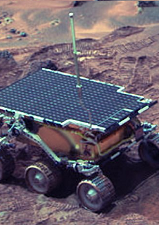
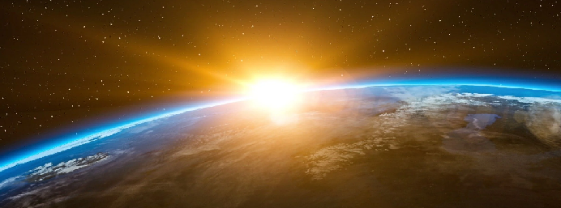

Name: Laika Age: 3 years (RIP) Location: Low Earth orbit Occupation: Astronaut
In November 1957, I became one of the the first animals launched into Earth orbit!
The sensors showed my hearth rate was 103 beats/min before launch and increased to 240 beats/min during the early acceleration.
After approximately five to seven hours into the flight, I died from overheating.
I proved that a living passenger could survive being launched into orbit and endure a micro-g environment, paving the way for human spaceflight.
🌌
Name: Tardigrades Age: 2 years (non-dormant) Location: Outer space Occupation: Astronaut
In 2007, tardigrades were the first animals to survive outer space!
Tardigrades are extremophiles: lack of oxygen, radiation, freezing cold, dehydration… Nothing phases a tardigrade.
They orbited the Earth outside a rocket for 10 days. When they were re-hydrated on their return to Earth, scientists discovered 68% had survived the extreme cold and space radiation.
🌌

Name: Sojourner Age: 83 days (RIP) Location: Mars Occupation: Planetary rover
In 1997, the first successful rover on Mars, called Sojourner, was delivered to the surface by the Pathfinder lander!
Pathfinder deployed a parachute and also shed the heat shield after re-entry. To touch down on the surface, a cocoon of airbags was used.
The rover analized Martian dust & atmosphere and sent more than 550 pictures. The lander sent more than 16,500 images.
Space Exploration 🌘
Introduction
I chose "Space Exploration" as my topic. On this page some loosely related information is presented in different ways. I also included some sources and -because I'm new to this- work methods.

👈 This page is dedicated to Laika, the first dog in space. 🚀
Space News
Let's get up-to-date with space! To get us started I included and edited a RSS-feed with the latest news from NASA:
You can include a news feed of your choice in your website by following/adjusting these steps:
Look online for the content you want. I found mine on NASA RSS Feeds.
If you're new to this, you can generate JavaScript from your RSS-url on a site like feedroll RSS-viewer.
Lastly, add all code snippets to your project files. Adjust details to fit your website.
Good luck and happy reading!
Gravitational slingshot
Getting into space requires a lot of energy! Gravity assistance can be used to accelerate a spacecraft, that is, to increase or decrease its speed or redirect its path. The "assist" is provided by the motion of the gravitating body as it pulls on the spacecraft (read more on Wiki).
Voyager 1 using gravity assistance from Jupiter and Saturn.
Notice in the bottom-left corner how the Voyager slows down (to 13km/s) after launch, but picks up speed when it passes Jupiter (24km/s). Right now the Voyager 1 is flying at 56327km/h. Yeeting stuff into space sure looks fun!
Dream in lightyears
As you know, distances across the vast universe are measured in lightyears (a unit of astronomical distance equivalent to the distance that light travels in one year).
The distance from the Sun to Earth is 0,000015874 lightyear. It's about 4.246 lightyears to the next star: Proxima Centauri.
Try putting these numbers into the converter below to get a sense of the gigantic scale...
Distance Converter
Type a value in the 'Lightyears' field to convert the value to kilometers (e.g. 4.246):
Distance in kilometers:
I made this converter by adjusting a script from w3schools that was originally used for mph to kph convertion.
Mystery matter
The Universe is thought to consist of three types of substance:
Normal matter consists of the atoms that make up stars, planets, human beings and every other visible object in the Universe.
Dark energy is the name given to the mysterious force that's causing the rate of expansion of our universe to accelerate over time, rather than to slow down.
Dark matter is the name we give to all the mass in the universe that remains invisible.
This is the composition of the universe:
This simple chart was created and embedded using the Chart API at google.com/chart.
It illustrates how little we know about reality. Because of Dark Energy, the universe is going through an accelerated period of expansion: other star clusters are moving away from us, making large-scale exploration near impossible in the distant future.
Permanent residence
The International Space Station is a co-operative programme between Europe, the United States, Russia, Canada, and Japan for the joint development, operation and utilisation of a permanently inhabited Space Station in low Earth orbit.
The station serves as a microgravity and space environment research laboratory in which scientific research is conducted in astrobiology, astronomy, meteorology, physics, and other fields.The ISS is suited for testing the spacecraft systems and equipment required for possible future long-duration missions to the Moon and Mars.
The ISS consists of pressurised habitation modules, structural trusses, photovoltaic solar arrays, thermal radiators, docking ports, experiment bays and robotic arms. The video below shows you a look inside.
Tour of International Space Station - Inside ISS.
The ISS circles the Earth in roughly 93 minutes, completing 15.5 orbits per day. (read more on Wiki).